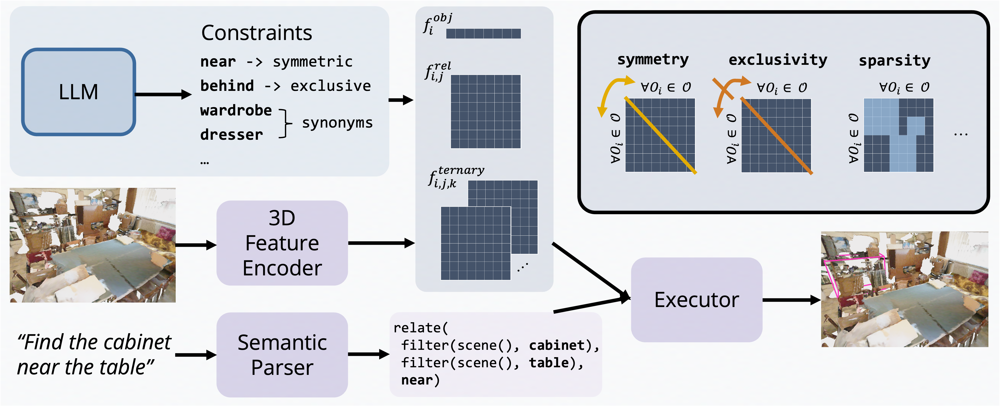
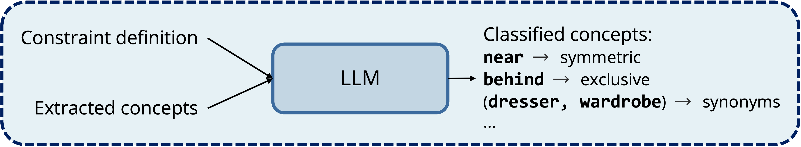
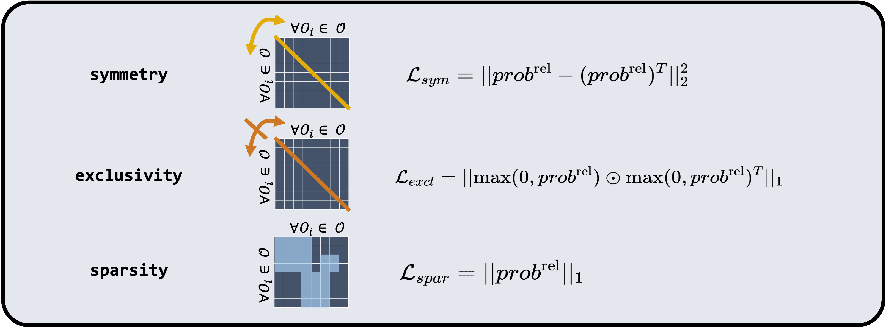

Method
To learn in the naturally supervised setting, LARC combines language priors and neuro-symbolic concept learners.
Neuro-symbolic concept learners decompose visual reasoning queries into modular functions, and execute them with neural networks.
Each network outputs representations that can be indexed by its concept name and arity.
Due to this modularity and structured representation, prior neuro-symbolic works have shown strong generalization, data efficiency, and transferability in the 3D domain.
LARC builds on a structured neuro-symbolic model, and importantly regularizes the structured and interpretable representations based on explicit language constraints, in order to learn without direct supervision.
3D Neuro-Symbolic Model
A neuro-symbolic concept learner for 3D grounding consists of three components:
1. A semantic parser parses the input utterance into a symbolic program that represents the reasoning process underlying the utterance.
2. A 3D feature encoder extracts object feature fobj, and relational features frel and fternary, which represent object features, binary relations (e.g., beside) and ternary relations (e.g., between) among objects, respectively.
3. A fully differentiable program executor takes the program and extracted features fobj, fbinary and fternary, and executes the program with the features to find the target object.

To enable learning in naturally supervised settings, LARC introduces regularization on intermediate representations based on language constraints.
Constraints Generation with LLMs
LARC leverages general constraints derived from well-studied semantic relations between words, for example, symmetry, exclusivity, and synonymity, which are broadly applicable across all language-driven tasks. Notably, concepts satisfying these constraints can be distilled from LLMs based on language priors explicitly.

Constraints on Structured Representations
LARC effectively encodes semantic contexts from language into neuro-symbolic concept learners through regularization.
Specifically, during the execution of neuro-symbolic programs, relations between objects are represented as probability matrices. Their elements are interpreted as the likelihood that the referred relation exists between the pair or triple of objects. For example, probneari,j specifies the probability that object i is near object j, where i, j are indices of objects.
So, for each type of concepts, we encourage the probability matrices to behave differently.
For example, for symmetric concepts (e.g., near), we encourage probability matrices to be symmetric, and penalize asymmetric ones, which is represented as a regularization loss in LARC.
